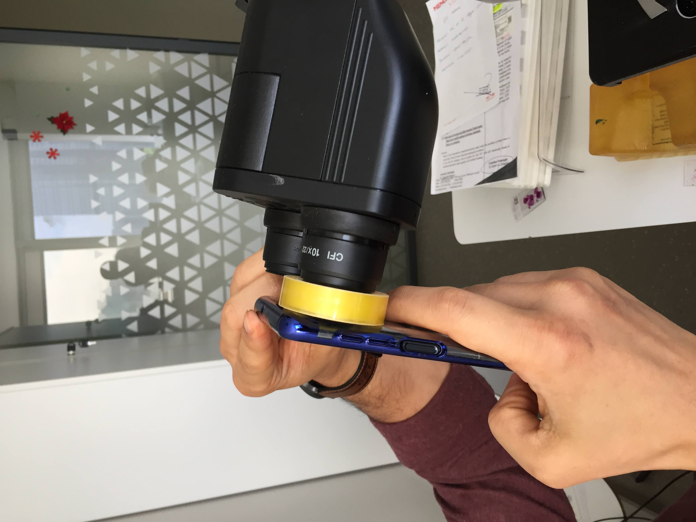
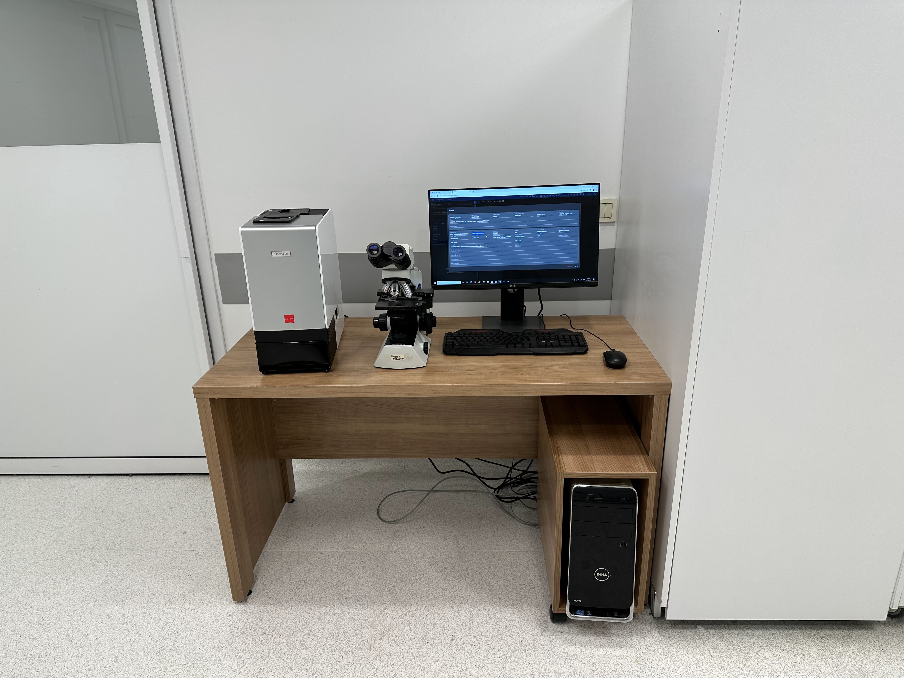

Dijital Patoloji Nedir Ki?
Dijital Patoloji Nedir Ki?

Dijital patoloji deyince aklımıza hemen scanner geliyor. Koca bir makina ve değişik bir şey olduğu için ona odaklanıyoruz. Ama aslında tarama cihazları dijital patoloji için kısmen gerekli olsalar da yeterli değiller.
Dijital Patoloji
- Dijital Patoloji İçin Tarayıcı Şart mı?
- Dijital Patoloji Nerede Kullanılıyor?
Dijital patoloji deyince aklımıza hemen scanner geliyor. Koca bir makina ve değişik bir şey olduğu için ona odaklanıyoruz. Ama aslında tarama cihazları dijital patoloji için kısmen gerekli olsalar da yeterli değiller.
Dijital Patoloji
Konsültasyon


Kısmen gerekli olsalar da dedim, çünkü dijital patolojiyi konsültasyonlar için cep telefonlarıyla kullanabiliyoruz.
Dijital Patoloji
Frozen


Frozen
Dijital Patoloji
Eğitim
Eğitim için var olan kaynaklar oldukça yeterli, biraz didiklemek gerekiyor.
Patoloji Atlası
Dijital Patoloji
Araştırma


Dijital Patoloji
Araştırma

Araştırma içinse hala daha işlenmeyi bekleyen petabytlarca açık veri var, ilgilenecekleri bekliyor. - İki cam arasını sonunda sayısallaştırdık, şimdi analiz zamanı.[^1] [^1]: Burak Buyrukbilen
Dijital Patoloji
Kullanım ihtiyacınıza göre olmasa da olur.
Tüm laboratuvarın entegre olmadığı bir durumda scanner pahalı bir fotoğraf makinası olarak kalacaktır.
Görüntünün Dijitalleştirilmesi
Patolojinin Verileştirilmesi